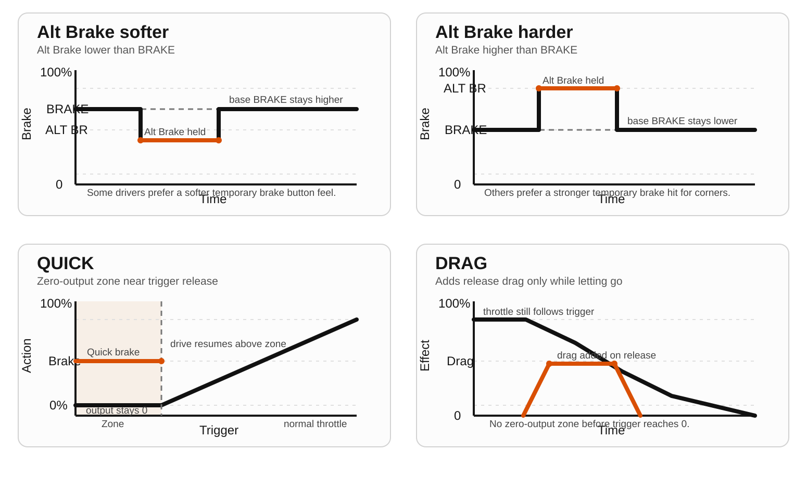
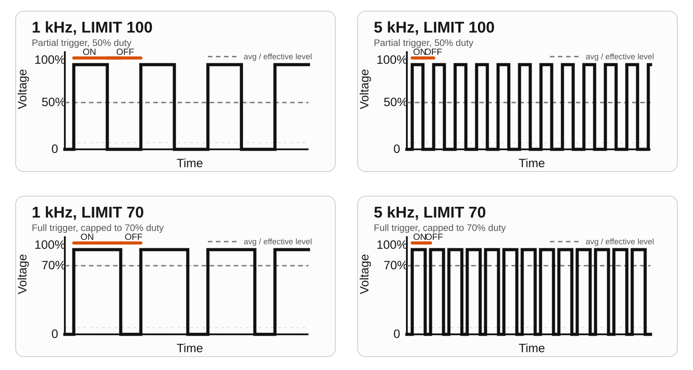

ESPEED32 Guia de Usuario
Guia practica para usar el controlador en pista: arranque, ajustes clave de conduccion, menus y backup/restore.
- Fuente firmware: ESPEED32 (
source/ESPEED32/). - Manuales locales en el repo: Quick Start + Extended Guide (carpeta DOC, DOCX/PDF).
- Referencia ACD: ACD PRO Manual 11E.
- Referencia CarSteen: CS 4.2 Owner's Guide.
La documentacion en espeed32.com siempre muestra la ultima version publicada. La copia guardada en el controlador sigue la version de firmware que realmente tiene instalada y se actualiza junto con ella.
1. Inicio rapido
- Enciende el controlador normalmente.
- Gira el encoder para moverte por el menu.
- Pulsacion corta del encoder: entrar/salir de edicion o abrir submenu.
- Pulsacion corta del boton de freno durante edicion: cancelar (restaurar valor original).
- Pulsacion larga del encoder (~1s): cambiar entre vista LIST y GRID (si race view no esta en OFF).
2. Arranque, calibracion y self-test
- Recalibra el trigger despues de actualizar firmware o si cambias su mecanica.
Power ON: arranque normal y luego modo RUNNING.- Mantener
encoder buttonal encender: calibracion del trigger. - Mantener
brake buttonal encender: Self-Test (9 pasos).
Flujo de calibracion
- Mantener encoder al encender hasta ver la pantalla de calibracion.
- Pulsar y soltar el trigger completamente varias veces.
- Pulsar encoder una vez para guardar.
- Verificar 0% con trigger suelto y 100% con trigger al maximo.

Mecanica del trigger
- El recorrido del trigger puede ajustarse mecanicamente con el tornillo de tope trasero.
- El retorno depende de la precarga del muelle / tension de retorno; ajusta con cuidado el anclaje o el tensor del muelle.
- Despues de cambiar recorrido o tension del muelle, o si el controlador ha sido abierto, recalibra el trigger antes de conducir.
3. Clave en conduccion: BRAKE y FRENO+
BRAKE
Con trigger completamente suelto, el controlador aplica frenado normal usando el valor BRAKE.
FRENO+ en el menu principal abre el submenu de frenado avanzado. Alli ahora estan Freno Alt y R-Freno.
Freno Alt (dentro de FRENO+)
Freno Altes un valor alternativo de freno (0-100%), no una reduccion relativa.- Solo se aplica cuando trigger = 0 y mantienes pulsado el boton de freno.
- Si la barra de estado muestra OUTPUT, se ve
Bxxx%mientras el boton esta pulsado. - Uso tipico: frenado temporal mas duro/suave en curvas sin tocar el setup base.
- Algunos pilotos prefieren
Freno Altmas bajo que elBRAKEnormal para un boton de freno mas suave, mientras otros lo prefieren mas alto para un golpe mas fuerte. Esa parte depende sobre todo del gusto del usuario y de la sensacion del coche.
R-Freno (dentro de FRENO+)
R-BRAKEtiene tres modos:OFF,QUICKyDRAG.QUICKes la antigua zona de frenado antes del release completo: por debajo de laZonacorta la traccion y aplicaNivelcomo fuerza de freno.DRAGsolo actua mientras estas soltando el trigger. Mantiene la traccion activa y anade drag durante el movimiento de release, con sensacion mas suave que QUICK.Zonase usa solo enQUICK. En QUICK es una zona real de salida cero cerca del release del trigger.- Por eso con
QUICKactivo es normal ver algunos%Ten pantalla mientras la salida sigue en0%hasta pasar la zona seleccionada. - Diferencia principal:
QUICKhace un corte duro dentro de la zona, mientrasDRAGmantiene el throttle activo y solo anade drag mientras el trigger va hacia el release. - Uso tipico de QUICK: pistas o coches que necesitan una frenada temprana muy clara. Ejemplo:
Zona6-10% yNivel70-100% para una frenada fuerte y repetible al empezar a soltar la ultima parte del trigger. - Uso tipico de DRAG: coches nerviosos que se sienten demasiado bruscos con QUICK. Ejemplo:
Nivel20-50% para anadir desaceleracion suave al soltar, sin sensacion de corte total a cero. QUICK Zona: 0-50%.Nivel: 0-100%.- Usa QUICK para una entrada de freno mas clara. Usa DRAG si quieres apoyo al soltar pero con sensacion mas suave.

4. Parametros del menu principal
Idioma y pantalla
DISPLAY -> LANGUAGEelige entre etiquetas localizadas y los perfiles de nombres ENG/CS/ACD.NOR/ESP/DEU/ITA: interfaz localizada con los nombres estandarBRAKE/SENSI/ANTIS/CURVE/FADE/LIMIT.ENG: nombres genericos (BRAKE/SENSI/ANTIS/CURVE/FADE/LIMIT).CS: estilo CarSteen (ATTACK/CHOKE2/PROFIL/CHOKE1).ACD: estilo ACD donde hay equivalencia directa (SENSIyCHOKEpara LIMIT).DISPLAY -> CASEdecide si las etiquetas se muestran enUPPERoPascal.DISPLAY -> FONT SIZEcambia la vista de listas y menus entreLARGEysmall.
| Item | Rango | Default | Descripcion |
|---|---|---|---|
BRAKE | 0-100 % | 95 | Frenado con trigger suelto. |
SENSI | 0-90 % (y <= LIMIT) | 20 | Potencia minima al primer movimiento de trigger. |
ANTIS | 0-999 ms | 30 | Rampa anti-spin. Valor alto = entrega de potencia mas suave. El paso del encoder se ajusta globalmente en SETTINGS -> A STEP. |
CURVE | 10-90 % | 50 | Mapa de trigger. 50 = lineal. |
FADE | 0-30 % | 0 | Zona de salida suave. 0 = desactivado / comportamiento antiguo. Por encima de 0, la primera parte del trigger sube de 0 a SENSI antes de que siga la CURVE normal. |
PWM_F | 1.0-5.0 kHz | 4.0 | Frecuencia PWM del motor. |
FRENO+ / Freno Alt | 0-100 % | 50 | Valor alternativo de freno con boton de freno + trigger suelto. |
FRENO+ / R-Freno | OFF/QUICK(zona+nivel)/DRAG(nivel) | OFF | Ayuda de frenado al soltar trigger. QUICK usa zona a salida cero; DRAG anade drag sin zona. |
LIMIT | (SENSI+5)-100 % | 100 | Salida maxima del motor. |
STATS | - | - | Vueltas, mejor vuelta e historial. |
CAR | 0-19 perfiles | CAR0 | Seleccion y gestion de perfil. |
FADE en la practica
FADEcrea una rampa suave0 -> SENSIal inicio del recorrido del trigger.FADE = 0%lo desactiva y mantiene el tacto directo anterior.- Prueba
5-15%si el coche pega un golpe demasiado brusco justo cuando empieza SENSI. - Puedes pensar en
FADEcomo un primer punto extra en la grafica: solo cambia la parte baja, mientrasCURVEsigue moldeando el resto.

Valores tipicos de partida
Son puntos de partida, no reglas fijas. Sirven para acercarte rapido y luego ajustar un parametro cada vez.
Los valores correctos siguen dependiendo mucho del coche concreto, motor, neumaticos, grip de la pista y tambien de tu estilo personal de conduccion.
| Setup | SENSI | BRAKE | ANTIS | CURVE | FADE | PWM_F |
|---|---|---|---|---|---|---|
| 1/32 equilibrado | 28-35% | 90-95% | 40-90 ms | 40-50% | 0-6% | 4.0 kHz |
| 1/32 poco grip | 22-30% | 90-95% | 100-150 ms | 30-45% | 5-12% | 4.0 kHz |
| 1/24 equilibrado | 35-45% | 95-100% | 0-30 ms | 50-60% | 0-5% | 4.0 kHz |
| 1/24 mucho grip | 40-50% | 95-100% | 0-15 ms | 55-70% | 0-3% | 4.0 kHz |
Para las primeras pruebas, deja R-BRAKE en OFF. Anade QUICK o DRAG solo cuando la base de gas y freno ya se sienta bien.
Notas sobre linealidad
LIMIT: limite lineal del output mandado en %. La velocidad maxima real en pista no sera perfectamente lineal.BRAKE: mando lineal de freno/drag en %. La sensacion real de frenado depende del motor, neumaticos y grip de la pista.SENSI: suelo minimo lineal de output en %, pero no es una ganancia lineal a lo largo de todo el recorrido porqueCURVEmodela el resto.FADE: lineal en % de recorrido del trigger. Solo trabaja al principio y luego deja el control aCURVE.ANTIS: es sobre todo un ajuste de tiempo en ms. Cuando anti-spin esta activo, un valor mayor da una rampa mas larga/suave, pero la sensacion total no es perfectamente lineal porque tambien cambia el umbral de bypass a baja velocidad.
Ejemplos de CURVE
Estas figuras muestran primero la forma de respuesta, antes de pasar a la frecuencia PWM y al limite de duty.


LIMIT en la practica
LIMIT 100permite al controlador llegar al duty completo cuando el trigger y la curva lo piden.LIMIT 70limita el duty maximo a aproximadamente 70%, incluso con el trigger a fondo.

PWM_F en la practica
PWM_Fcambia la frecuencia de conmutacion, no el duty solicitado por si mismo.- Con
LIMIT 100, el gatillo parcial todavia puede trabajar a duty parcial. ConLIMIT 70, el gatillo al fondo queda limitado cerca del 70%. - Con el mismo duty,
1 kHzusa menos pulsos y mas anchos, mientras5 kHzusa mas pulsos y mas estrechos en la misma ventana de tiempo.

5. Vista de carrera (LIST vs GRID)
- LIST menu clasico con todos los items.
- GRID pantalla rapida para ajustar durante conduccion.
DISPLAY -> RACE MODE: OFF / FULL / SIMPLE.- FULL: BRAKE, SENSI, ANTIS, CURVE (+ CAR si
RACESWPesta ON). - SIMPLE: BRAKE, SENSI (+ CAR si
RACESWPesta ON). - Pulsacion larga del encoder cambia LIST/GRID.

6. Flujo del menu CAR
SELECT: elegir perfil activo (0-19).RENAME: editor de 4 caracteres (ASCII 32-122).RACESWP: ON permite cambio de perfil directo desde GRID.COPY: copiar de un perfil a otro o a todos.RESET: reset de perfiles de coche (con confirmacion).
7. SETTINGS y consumo estimado
Submenu POWER
SCRSV: texto de screensaver, timeout y mostrar ahora.SLEEP: sleep automatico + sleep manual (wake con encoder).DEEP SLEEP: deep sleep automatico (0 o 2-30 min) + manual.STARTUP: retardo de bienvenida 0-990 ms.VIN CAL: mide el voltaje real con multimetro, ajusta ese valor en el controlador y pulsa para calibrar la escala ADC. Usalo solo si la lectura VIN se ve claramente desviada.
Elementos raiz de SETTINGS
STATS: mostrar u ocultar STATS en el menu principal.A STEP: paso global del encoder para ANTIS, 1-50 ms (default 5 ms). ANTIS sigue siendo un parametro por perfil.ENC INV: invierte globalmente la direccion del encoder si el menu gira al reves.
Consumo estimado (electronica del controlador)
| Estado | Estimacion | Nota |
|---|---|---|
| Arranque | 120 mA | Fase corta de boot. |
| Operacion normal | 100 mA | Uso tipico sin WiFi. |
| WiFi activo | 150 mA | Modo AP + servidor web. |
| Screensaver | 80 mA | Baja actividad. |
| SLEEP (soft) | 55 mA (estimado) | OLED off, CPU 80 MHz, task de motor suspendida. |
| DEEP SLEEP | 10 mA (estimado) | Estado tipo apagado, wake por ciclo de alimentacion. |
Valores estimados; dependen de tension, hardware y metodo de medicion. La carga del motor del coche no esta incluida.
Bateria interna (opcional)
Algunas variantes de hardware pueden incluir una pequena bateria de litio de 1 celda para ajustes fuera de pista. Se carga cuando el controlador esta alimentado desde la pista o desde USB. Esta bateria esta pensada para cambios de menu, preparacion antes de la carrera, cambio de carril o para evitar retrasos si la pista aun no tiene alimentacion. No esta pensada para uso standalone prolongado.
La autonomia de abajo significa uso del controlador sin estar conectado a la pista. La corriente de carga puede variar segun cargador y hardware, pero si la carga real esta cerca de 200 mA y el controlador consume alrededor de 100 mA, la autonomia fuera de pista suele quedar en torno al doble del tiempo de carga. El tiempo real de carga de litio aun asi suele ser un poco mayor que la cuenta ideal porque la fase final se vuelve mas lenta cerca del lleno.
| Bateria | Tiempo tipico de carga | Autonomia tipica fuera de pista |
|---|---|---|
| 1S Li-ion/LiPo 250 mAh | aprox. 1.4-1.8 horas | aprox. 2.0-2.5 horas |
| 1S Li-ion/LiPo 500 mAh | aprox. 2.8-3.6 horas | aprox. 4.0-5.0 horas |
8. Consejos de conduccion
- Cambia un parametro por vez y prueba 5-10 vueltas antes del siguiente cambio.
- Orden recomendado:
SENSI,FADE,BRAKE,ANTIS,CURVE,PWM_F. - 1/32 en pista deslizante: subir
ANTIS(100-150 ms) y usarCURVE< 50. - 1/24 con buen grip:
ANTISbajo (0-40 ms) yCURVE50-70. - Usa
FRENO+ -> Freno Altcomo ajuste temporal de frenada sin cambiar el BRAKE base. - Usa
FRENO+ -> R-Freno QUICKcon zona baja (5-12%) y nivel medio (40-70%) para frenada temprana mas clara. PruebaDRAGsobre 20-50% si quieres ayuda al soltar sin una zona a salida cero. - Si el coche golpea demasiado justo al empezar a actuar el trigger, manten
SENSIdonde te gusta y prueba un poco deFADEantes de bajar SENSI.
9. WiFi/USB backup, restore y OTA
WiFi
- Entrar en
SETTINGS -> WIFIpara abrir el submenu WiFi. START WIFI/STOP WIFI: activa o detiene WiFi en segundo plano al instante.INFO PAGE: abre la pagina WiFi y activa WiFi/AP automaticamente. Al salir de esa pagina, WiFi se apaga otra vez (si no habias activado antes el modo en segundo plano).VER QR: abre un QR WiFi a pantalla completa para conectar el movil o tablet directamente al AP.AUTO OFF: define el timeout para WiFi en segundo plano (1-120 min, por defecto 5 min).- Mientras WiFi esta activo: conectar a
ESPEED32_XXXX(passwordespeed32) y abrir la IP mostrada en OLED (normalmente192.168.4.1). - En la pagina de info puedes usar
Backup,Restore, elAdvanced Config Editor,Upload Firmwarey/docs.

WiFi aumenta el consumo de la electronica del controlador de unos 100 mA a unos 150 mA, es decir, alrededor de un 50% mas. En unidades con bateria, usa WiFi con moderacion y apagalo al terminar.
Barra de estado con WiFi activo: WIFI usa primero un slot vacio; si no hay slot libre, se muestra temporalmente en el slot 4 hasta que WiFi se detenga.
Advanced Config Editor
- El portal del navegador tambien incluye un
Advanced Config Editorpara ajustar el setup en vivo. Global Configedita ajustes globales del controlador.Car Paramsedita el perfil de coche seleccionado.- En
Car Paramspuedes cargar y editar cualquier perfil directamente desde la lista desplegable, aunque otro perfil siga activo en el controlador. Refresh from devicevuelve a leer los valores actuales desde el controlador.Apply (RAM only)te deja probar cambios en vivo sin escribir flash primero. Es ideal para experimentar en pista con freno, gas, anti-spin, curva, fade o release brake.Apply + Save to flashguarda esos mismos valores de forma permanente cuando ya te convencen.- En la pagina WiFi del controlador el editor funciona directamente en el navegador por WiFi. En
espeed32.com, el mismo editor requiere USB/WebSerial.

Car Params con seleccion de perfil y ajustes del coche editables en vivo. La interfaz aparece en ingles aqui, pero el flujo de uso es el mismo en todos los manuales.USB
- Entrar en
SETTINGS -> USB INFO. - Usar Chrome/Edge (WebSerial).
- Backup/restore funciona por USB; OTA requiere modo WiFi.
No cortes alimentacion durante OTA.
10. Arbol de menu (mapa completo)
ROOT (Main Menu) |- BRAKE |- SENSI |- ANTIS |- CURVE (graph view) |- FADE (graph view) |- PWM_F |- FRENO+ | |- Freno Alt (%) | |- R-Freno (OFF/QUICK/DRAG) | |- Zona (%) [solo QUICK] | |- Quick (%) [modo QUICK] | |- Drag (%) [modo DRAG] | `- Back |- LIMIT |- SETTINGS | |- POWER | | |- SCRSV | | | |- NOW | | | |- LINE1 | | | |- LINE2 | | | |- TIME (0-240 s, 0=OFF) | | | `- BACK | | |- SLEEP | | | |- SLEEP NOW | | | |- INTERVAL (0-10 min, 0=OFF) | | | `- BACK | | |- DEEP SLEEP | | | |- SLEEP NOW (power-off) | | | |- INTERVAL (0 or 2-30 min) | | | `- BACK | | |- STARTUP (0-99 x 10ms) | | |- VIN CAL | | `- BACK | |- DISPLAY | | |- RACE MODE (OFF/FULL/SIMPLE) | | |- LANGUAGE (NOR/ENG/CS/ACD/ESP/DEU/ITA) | | |- CASE (UPPER/Pascal) | | |- FONT SIZE (LARGE/small) | | |- STATUS BAR | | | |- SLOT 1 | | | |- SLOT 2 | | | |- SLOT 3 | | | |- SLOT 4 | | | `- BACK | | `- BACK | |- SOUND | | |- BOOT (ON/OFF) | | |- RACE (ON/OFF) | | `- BACK | |- STATS (ON/OFF) | |- A STEP (1-50 ms, default 5) | |- ENC INV (ON/OFF) | |- WIFI | | |- START/STOP WIFI | | |- INFO PAGE | | |- VER QR | | |- AUTO OFF (1-120 min, default 5) | | `- BACK | |- USB INFO | |- RESET | | |- CAR | | |- SETTINGS | | |- CALIBRATION | | |- EVERYTHING | | `- BACK | |- TEST (Self-Test, 9 steps) | |- ABOUT | `- BACK |- STATS `- CAR |- SELECT |- RENAME |- RACESWP (grid car select ON/OFF) |- COPY |- RESET `- BACK